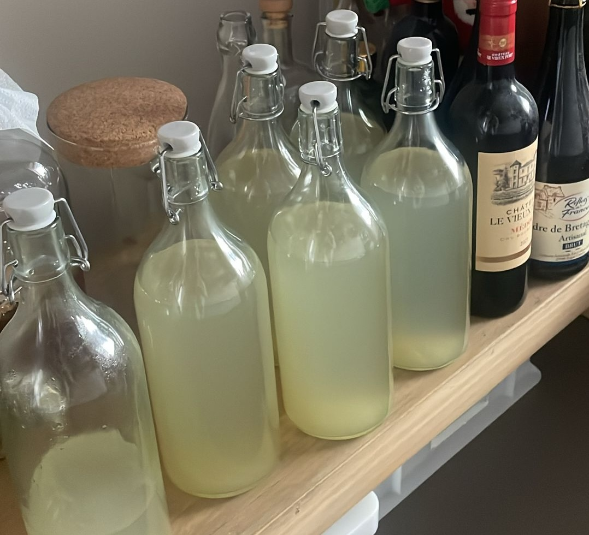

Ginger Beer
Ingrédients
- 500 ml d'eau filtrée
- 5 c.a.s. de gingembre frais
- 3 c.a.s. de sucre
- 1.4 litre d'eau
- 150 g de sucre
- une pincée de sel
- 60 ml de jus de citron frais

Préparation
Ginger bug
Étape 1
Verser 500 ml d'eau filtrée dans un bocal en verre propre. Ajouter 2 c.a.s. de gingembre frais râpé ou haché et 2 c.a.s. de sucre. Bien mélanger. Couvrir le bocal avec un tissu et laisser à température ambiante, à l’abri du soleil direct.
Étape 2
Pendant les 2 à 6 jours suivants, toutes les 24 heures, nourrir le levain avec 1 c.a.s. de gingembre frais et 1 c.a.s. de sucre. Bien mélanger.
Des bulles peuvent apparaître et le gingembre peut remonter à la surface : c’est bon signe. La durée de fermentation dépend de la température ambiante et de différents facteurs.
Étape 3
Lorsque le ginger bug est bien pétillant, il est prêt à être utilisé pour préparer la ginger beer.
Ginger beer
Étape 4
Faire chauffer 1.4 litre d'eau, 150 g de sucre (sucre blanc ou sucre de coco), 2 c.a.s. de gingembre frais râpé et une pincée de sel (facultatif) jusqu’à frémissement, en remuant pour dissoudre le sucre.
Laisser refroidir à température ambiante pour que le gingembre infuse.
Étape 5
Filtrer le mélange pour retirer le gingembre. Ajouter 60 ml de jus de citron frais et 80 ml de ginger bug filtré.
Étape 6
Verser la préparation dans des bouteilles en plastique ou en verre en laissant environ 5 cm d’espace en haut de chaque bouteille. Fermer hermétiquement.
Étape 7
Vérifier la carbonatation après 3 jours. Si nécessaire, poursuivre la fermentation jusqu’à une semaine.
Une fois la boisson suffisamment pétillante, la conserver au réfrigérateur pour ralentir la fermentation. Ouvrir légèrement les bouteilles chaque jour pour relâcher la pression.
Conseils
Nourrir le ginger bug
- Avec 2 cuillères à soupe, la fermentation est plus rapide et le levain grandit davantage, mais demande plus d’entretien.
- Une cuillère à soupe de chaque ingrédient par jour suffit généralement pour maintenir un levain actif.
Choix des bouteilles
Les bouteilles en verre à fermeture mécanique sont idéales pour de petites quantités, à condition de surveiller régulièrement la pression et de les dégazer. Elles risquent de se briser si la pression devient trop élevée.
Pour les grandes quantités ou si vous risquez d’oublier de surveiller la fermentation, les bouteilles en plastique pour soda sont plus sûres. Elles doivent elles aussi être dégazées régulièrement, mais présentent moins de risques de bris dangereux.